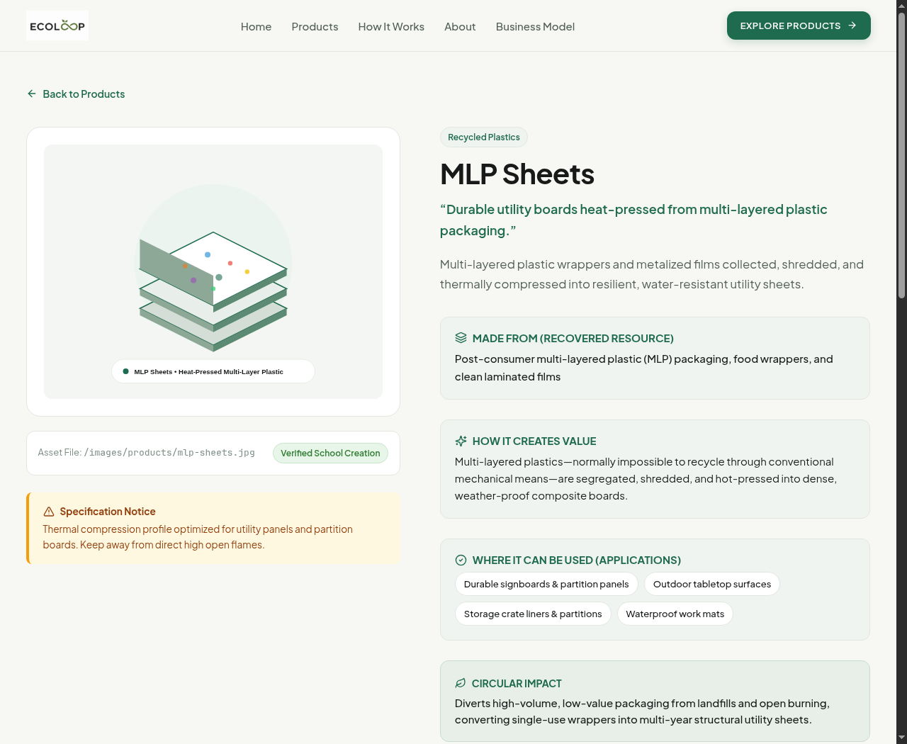

ECOLOOP: From Waste to Worth
A Student-Led Circular Economy & Digital Platform Initiative
Slide 01 / 12 • Overview
The 6,000 km Bridge
exchange context
-
SSDPS
Swami Sant Dass Public School • Jalandhar, Punjab, India Continental urban center tackling high-density packaging and school waste.
-
Lycée
Reunion Island High School • French Territory, Indian Ocean Island ecosystem collaborating via eTwinning (Belgium, Norway, Czech Republic).
Core Premise: Two distant high school communities applying technology and engineering to solve localized waste bottlenecks.
Presentation Scope
agenda
-
01
Physical Raw Material Interception Transforming campus packaging into 6 verified functional goods.
-
02
The Zero-Cost Digital Marketplace React 18 + serverless lead synchronization for $0.00/month.
-
03
The Agentic AI Workflow Using open-source terminal agents (OpenCode) to ship full-stack code in 48 hours.
Swami Sant Dass Public School • Jalandhar, Punjab, India
Reunion Island eTwinning Collaboration
The Physical Foundation: 6 Verified Goods
Slide 02 / 12 • Material Stream
Plastics & Packaging
recycled plastics
-
01
Eco-Bricks Standardized PET bottles packed with clean soft plastics for non-structural garden borders.
-
02
MLP Sheets Multi-layered plastic wrappers thermally compressed into weather-proof partition boards.
Targets non-recyclable metallized chip/snack packaging.
Textiles & Cellulose
upcycled materials
-
03
Uniform Bags Outgrown school uniforms laundered and stitched into heavy-duty carry totes.
-
04
Seed Paper Post-consumer notebook paper pulped and embedded with native germinable seeds.
Intercepts annual uniform and notebook turnover.
Biology & Upcycling
organic recovery
-
05
Bioenzymes Canteen citrus peels fermented over 90 days into non-toxic cleaning solution.
-
06
Bottle Planters Recovered PET beverage bottles fitted with wicking cords for classroom herbs.
Diverts methane-producing organic waste from dumps.
Strict Criterion: Practical functional utility only. Zero decorative craft items.
ECOLOOP Product Portfolio
The Challenge: The Science Fair Trap
Slide 03 / 12 • Problem Diagnosis
The Recurring Failure Mode
"99% of school environmental projects build great prototypes, win an exhibition certificate, and then rot in a dusty display cabinet forever."
Without an active digital inventory, transparent material data, and an inquiry routing pipeline, a physical recycling project cannot sustain itself beyond exhibition day.
Why Software Matters: Transforming temporary demonstration projects into persistent systems.
The Digital Imperative
The Platform: Live Web Catalog
Slide 04 / 12 • Software Execution
Marketplace Catalog
client layer
-
01
Dynamic Category Filtering Instant client-side sorting across Recycled Plastics, Textiles, and Organic Recovery.
-
02
Real-Time Query Search Searches by input material, product name, or campus application.
-
03
Mobile-First Responsive Layout Optimized touch interaction for students browsing on smartphones.
Built with React 18, TypeScript, and Vite.
ecoloop-ssdps.vercel.app/products

Production Web Application • Live React Frontend
Screen 01: Product Catalog
Material Transparency & Honesty
Slide 05 / 12 • Product Specification
ecoloop-ssdps.vercel.app/products/mlp-sheets

Rigorous Specifications
verified data
-
input
Recovered Material Sourcing Every product explicitly names its input waste stream (e.g. post-consumer MLP packaging).
-
caution
Strict Safety & Caution Notices Mandatory disclosures: e.g. Eco-bricks are non-structural; Bioenzymes are non-clinical.
-
impact
Circular Lifecycle Tracking Transparent explanation of value creation without exaggerated environmental claims.
Zero greenwashing. Complete engineering honesty.
Product Detail Page • Dedicated Specifications and Safety Disclosures
Screen 02: Specification Transparency
The $0.00 Serverless Architecture
Slide 06 / 12 • System Design
Decoupled Data Pipeline
resilience
-
01
React 18 + TypeScript Frontend Single Page Application compiled to static assets and deployed to edge CDN (Vercel).
-
02
Client-Side LocalStorage Buffer Caches product inquiries locally so submissions never drop during weak campus Wi-Fi.
-
03
Google Apps Script Serverless Webhook HTTP POST endpoint receives payload and authenticates submission with zero server maintenance.
-
04
Google Sheets Live Datastore Acts as a real-time collaborative database accessible to faculty and student leads.
Operating Cost Ledger
budget: 0.00 €
// Monthly Infrastructure Invoice
Frontend Edge Hosting: $0.00 (Vercel Tier)
Backend API Computing: $0.00 (Google Apps Script)
Database Storage: $0.00 (Google Sheets)
SSL Certificate & CDN: $0.00 (Included)
--------------------------------------
TOTAL MONTHLY OVERHEAD: $0.00 / month
Frontend Edge Hosting: $0.00 (Vercel Tier)
Backend API Computing: $0.00 (Google Apps Script)
Database Storage: $0.00 (Google Sheets)
SSL Certificate & CDN: $0.00 (Included)
--------------------------------------
TOTAL MONTHLY OVERHEAD: $0.00 / month
Takeaway for Students: You do not need funding or enterprise cloud subscriptions to launch a production-grade digital platform.
Resilient Architecture • Local Cache + Serverless Webhook + Cloud Sheet
Zero Cost Infrastructure
Beyond Chatbots: The Agentic Harness
Slide 07 / 12 • Engineering Paradigm
01 / The Consumer Approach
isolated chatbox
Treating AI as an automated essay or text generator:
// Typical Student Prompt:
"Write a 400-word paragraph about recycling plastic wrappers with a strong introduction..."
"Write a 400-word paragraph about recycling plastic wrappers with a strong introduction..."
- ×Zero Software Output: Produces throwaway words, not software.
- ×Zero Engineering Feedback: No compiler verification, no runtime testing.
02 / The Agentic Coding Harness
autonomous loop
Pair-programming with an autonomous software agent:
// The Three Pillars of a Harness:
1. Model (The Brain): LLM reasoning engine.
2. Tools (The Hands): Reads files, edits diffs, runs terminal.
3. Environment: Local repo, compiler, linter, and git.
1. Model (The Brain): LLM reasoning engine.
2. Tools (The Hands): Reads files, edits diffs, runs terminal.
3. Environment: Local repo, compiler, linter, and git.
- ✓Self-Correcting: Agent reads compiler errors and fixes bugs itself.
- ✓Direct Production: Edits components, compiles bundles, pushes commits.
The Paradigm Shift: From passive prompt-answering to active workspace manipulation.
Agentic Architecture
The Feedback Loop: How We Shipped Fast
Slide 08 / 12 • Workflow Mechanics
The 5-Step Autonomous Cycle
execution engine
-
01
Specification (AGENTS.md) Engineer defines product data, brand constraints, and routing architecture in Markdown.
-
02
Autonomous Code Generation Agent edits React TypeScript components and updates CSS design tokens.
-
03
Local Compiler Execution Agent executes `tsc && vite build` directly in the project workspace.
-
04
Autonomous Self-Correction If TypeScript throws a type mismatch, the agent inspects stderr and repairs the file.
-
05
Git Persistence Agent stages modified files and commits clean, version-controlled checkpoints.
Compiler Verification Terminal
production build
> ecoloop-marketplace@1.0.0 build
> tsc && vite build
vite v6.4.3 building for production...
✓ 1607 modules transformed.
dist/index.html 1.72 kB | gzip: 0.76 kB
dist/assets/index.css 19.25 kB | gzip: 4.04 kB
dist/assets/index.js 260.57 kB | gzip: 75.94 kB
✓ built in 1.90s with zero errors
> tsc && vite build
vite v6.4.3 building for production...
✓ 1607 modules transformed.
dist/index.html 1.72 kB | gzip: 0.76 kB
dist/assets/index.css 19.25 kB | gzip: 4.04 kB
dist/assets/index.js 260.57 kB | gzip: 75.94 kB
✓ built in 1.90s with zero errors
Human Role: Architect, product designer, and quality verifier.
Agent Role: Syntax executor, boilerplate writer, and compiler troubleshooter.
Agent Role: Syntax executor, boilerplate writer, and compiler troubleshooter.
Engineering Reality • Human specifies; AI agent executes, compiles, and verifies
The Agentic Cycle
OpenCode: Free & Open Source Agent
Slide 09 / 12 • Student Tooling
What is OpenCode?
opencode.ai
-
01
Open Source Terminal & Desktop Agent A fully open-source AI coding harness developed for terminal TUIs and desktop environments.
-
02
Zero Financial Requirement 100% free software. Does not require paid IDE subscriptions or enterprise accounts.
-
03
Two Specialized Operating Modes `plan` mode explores code safely; `build` mode executes full autonomous edits.
-
04
GitHub Actions Integration Comment `/opencode` on GitHub PRs and issues to automate cloud coding for free.
Installation & Setup
1-minute setup
# Install OpenCode globally via npm
npm install -g @opencode/cli@latest
# Or install via standalone script
curl -fsSL https://opencode.ai/v2/install | bash
# Launch in any project directory
opencode
npm install -g @opencode/cli@latest
# Or install via standalone script
curl -fsSL https://opencode.ai/v2/install | bash
# Launch in any project directory
opencode
Runs natively on Linux, macOS, and Windows.
Accessible Tooling • Open-source agent available at github.com/anomalyco/opencode
OpenCode Architecture
Running on $0: Free Models & Local LLMs
Slide 10 / 12 • Zero Budget Strategy
Approach 1: Free Cloud Tiers
high speed
-
Groq
High-Speed Free Inference Generous free rate limits running Llama 3 models at 300+ tokens/second.
-
Router
OpenRouter Free Endpoints Access dozens of competitive open-weight coding models with zero credit card entry.
Ideal for laptops with standard specifications and active internet connection.
Approach 2: Offline Local LLMs (Ollama)
100% offline
-
Ollama
Local Model Execution Run models directly on your hardware without transmitting code over the internet.
-
Models
Top Free Coding Weights `qwen2.5-coder:7b`, `llama3.1:8b`, or `deepseek-coder` run on consumer laptops.
ollama run qwen2.5-coder:7b
# Point OpenCode to local Ollama host:
export OPENCODE_PROVIDER=ollama
# Point OpenCode to local Ollama host:
export OPENCODE_PROVIDER=ollama
Complete Financial Accessibility • Cloud Free Tiers or Local On-Device Compute
Cost-Free Inference
The Reunion Island Blueprint: 48-Hour Plan
Slide 11 / 12 • Actionable Next Steps
Step 1: Data Structuring
input
-
01
Index Cleanup Volume Log kilograms of bottles, wrappers, and beach plastic gathered during cleanups.
-
02
Gather Radio Podcast Audio Consolidate audio files and student reflection links into a clean Markdown table.
Step 2: Agentic Scaffolding
build
-
03
Initialize OpenCode Run `opencode` inside a new Vite web repository.
-
04
Autonomous UI Generation Prompt agent to scaffold a podcast audio player and live rubbish metric dashboard.
Step 3: Global Deployment
ship
-
05
Deploy to GitHub Pages / Vercel Push repo to GitHub; automated actions deploy live site in under 60 seconds.
-
06
Public International Hub Partner schools in Belgium, Norway, and Czech Republic can stream episodes and view stats.
Concrete Execution Protocol • From Beach Cleanups and Radio Podcasts to a Live Web Hub
The 48-Hour Roadmap
Open Discussion & Technical Q&A
Slide 12 / 12 • Interactive Session
Discussion Prompts
open floor
-
material
Plastics & Processing Questions on multi-layered plastic thermal compression, density, or bioenzyme fermentation.
-
software
Digital Architecture Questions on React 18, Google Apps Script serverless routing, or Google Sheets datastores.
-
ai agent
OpenCode & Agentic Workflows Questions on setting up open-source coding harnesses, local LLMs, or prompt specifications.
Thank You.
Looking forward to hearing about your local environmental initiatives and software experiments.
Swami Sant Dass Public School • Jalandhar, India
Live Q&A • 30 Minutes Discussion and Experience Exchange
Session Concluded